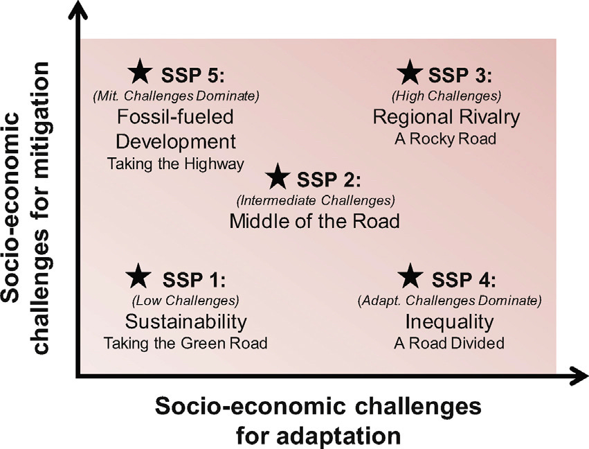
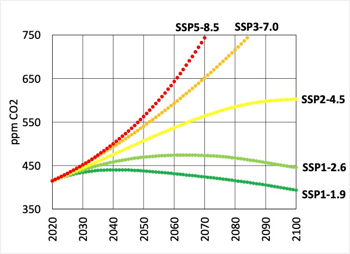
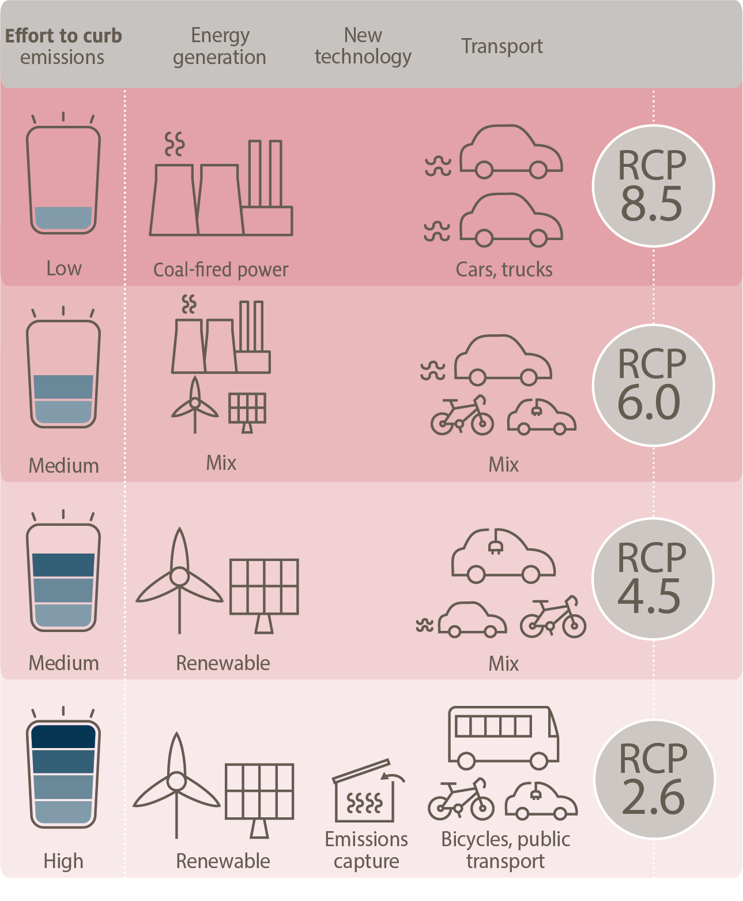

I’m Jonathan Burbaum, and this is Healing Earth with Technology: a weekly, Science-based, subscriber-supported serial. In previous installments of this serial, I have offered a peek behind the headlines of science, focusing on climate change/global warming/decarbonization. I have welcomed comments, contributions, and discussions, particularly those that follow Deming’s caveat , “In God we trust. All others, bring data.” With this issue, I’m pivoting slightly to a more direct approach.
COP26 is now over, and, like its 25 predecessor “Conferences of Parties”, it’s produced a series of toothless political commitments that are loosely based on recommendations given by large teams of scientists. Sadly, such approaches, while intellectually honest, are seriously limited in scope, and thus doomed to failure in the long run. Given the continued naive commitments of our leaders, I must now propose a more aggressive pitch:
One planet. One solution. Now.
That’s intentionally provocative, but not prescriptive. No treatment has all the answers. But we must prepare to act with clear-headed decisions—any partial solution should be required to bring the rest of the solution to the table as well, and to specify what the tradeoffs are. We won’t get too many chances to get it right.
You can read Healing for free, and you can reach me directly by replying to this email. If someone forwarded you this email, they’re asking you to sign up. You can do that by clicking here .
If you really want to help spread the word, then pay for the otherwise free subscription. I use any fees to increase readership through Facebook and LinkedIn ads.
Today’s read: 10 minutes.
As science nerds go, I’m not much of a Trekkie. But in looking for a suitable introduction to this installment, I came across this clip from the 1967 episode “Space Seed”, which introduced Kirk’s future nemesis, Khan, as a sinister product of (then) futuristic science.
KIRK: This Khan is not what I expected of a Twentieth-century man.
SPOCK: I note he's making considerable use of our technical library.
KIRK: Common courtesy, Mister Spock. He'll spend the rest of his days in our time. It's only decent to help him catch up. Would you estimate him to be a product of selective breeding?
SPOCK: There is that possibility, Captain.
SPOCK: His age would be correct. In 1993, a group of these young supermen did seize power simultaneously in over forty nations.
KIRK: Well, they were hardly supermen. They were aggressive, arrogant. They began to battle among themselves.
SPOCK: Because the scientists overlooked one fact. Superior ability breeds superior ambition.
KIRK: Interesting, if true. They created a group of Alexanders, Napoleons.
SPOCK: I have collected some names and made some counts. By my estimate, there were some eighty or ninety of these young supermen unaccounted for when they were finally defeated.
KIRK: That fact isn't in the history texts.
SPOCK: Would you reveal to war-weary populations that some eighty Napoleons might still be alive?
Indeed. Interesting. If true.
As I pointed out earlier , various climate interest groups like the Environmental Defense Fund are (literally) selling the idea that the IPCC has provided a “prescription” for solving the climate change problem. Such pitches suggest the existence of a coherent master plan for controlling our atmosphere that only requires willpower to execute. Given the pivot of this series, I thought it’d be worth taking another critical look at whatever solutions today’s climate brain trust proffers.
The 3,949-page IPCC AR6 WG1 report necessarily relies on computational models to evaluate the environmental consequences of various courses of action. But, an unreasonable amount of the report’s “Technical Summary” is devoted to what computer models predict based on energy choices that we can make today. So, the question that has to be answered is, “What, exactly, are the choices, and who needs to make them?”
The report considers only five illustrative scenarios to quantify humanity’s choices, labeled Shared Socio-economic Pathways (‘SSPs’). Standardizing the inputs and reducing the number of options makes sense because computer models will always provide an answer. But I’m already worried! First, it’s got the government-approved stain of a TLA (Three Letter Acronym). Second, it’s got a soft science ring to it: Climate science is firmly rooted in physical laws. So how did sociology and economics get involved? There’s got to be data here, somewhere, so let’s see if we can find it by digging a bit deeper.
It turns out that each SSP is a hyper-detailed narrative, with a suffix that quantifies the greenhouse effect as “forcing” (in watts per square meter) in the year 2100. [For reference, the forcing in 2015 was about 3 W•m-2.] Here’s a shortened description of each:
-
SSP1-1.9: Represents the 1.5°C goals of the Paris Agreement. Global CO2 emissions achieve net-zero around 2050
-
SSP1-2.6: Sustainable development. Global CO2 emissions are cut severely but achieve net-zero after 2050
-
SSP2-4.5: Intermediate. CO2 emissions hover around current levels before starting to fall mid-century but do not reach net-zero by 2100.
-
SSP3-7.0: Regional rivalry. CO2 emissions roughly double from current levels by 2100
-
SSP5-8.5: Fossil-fuel-based development. CO2 emissions roughly double from current levels by 2050
Net-zero rears its ugly head again, but this time, it’s not about a “pledge”. It’s about the actual state of the world. In other words, it’s not a promise. It’s an assumption. In the last installment , I showed how “climate pledges” have twisted net-zero into an accounting trick that substitutes emissions captured by emissions avoided (involving a third party). It’s a reverse ransom scheme, a threat to release greenhouse gases unless a ransom is paid. That scheme cannot possibly scale globally. Without an active technology for carbon removal, we will need to achieve “gross-zero,” because there’s no pathway to net-zero!
In any event, where did the five SSPs come from? Here’s the “map”:

The SSP1 (“sustainability”) approach is classified as a low challenge for socioeconomic mitigation and adaptation in this diagram. Interesting! If true.
Of course, the IPCC Brain Trust has released a “ Special Report ” that describes how the world can achieve the +1.5°C objective, quantified as the SSP1-1.9 nirvana. It’s worth reading the summary below. Judge for yourself if you think this will be easy, either sociologically or economically.
Summary : Limiting global warming to 1.5°C above pre-industrial levels would require major reductions in greenhouse gas emissions in all sectors. But different sectors are not independent of each other, and making changes in one can have implications for another. For example, if we as a society use a lot of energy, then this could mean we have less flexibility in the choice of mitigation options available to limit warming to 1.5°C. If we use less energy, the choice of possible actions is greater – for example, we could be less reliant on technologies that remove carbon dioxide ( CO2) from the atmosphere.
To stabilize global temperature at any level, ‘net’ CO2 emissions would need to be reduced to zero. This means the amount of CO2 entering the atmosphere must equal the amount that is removed. Achieving a balance between CO2 ‘sources’ and ‘sinks’ is often referred to as ‘net zero’ emissions or ‘carbon neutrality’. The implication of net zero emissions is that the concentration of CO2 in the atmosphere would slowly decline over time until a new equilibrium is reached, as CO2 emissions from human activity are redistributed and taken up by the oceans and the land biosphere. This would lead to a near-constant global temperature over many centuries.
Warming will not be limited to 1.5°C or 2°C unless transformations in a number of areas achieve the required greenhouse gas emissions reductions. Emissions would need to decline rapidly across all of society’s main sectors, including buildings, industry, transport, energy, and agriculture, forestry and other land use (AFOLU). Actions that can reduce emissions include, for example, phasing out coal in the energy sector, increasing the amount of energy produced from renewable sources, electrifying transport, and reducing the ‘carbon footprint’ of the food we consume.
The above are examples of ‘supply-side’ actions. Broadly speaking, these are actions that can reduce greenhouse gas emissions through the use of low-carbon solutions. A different type of action can reduce how much energy human society uses, while still ensuring increasing levels of development and well-being. Known as ‘demand-side’ actions, this category includes improving energy efficiency in buildings and reducing consumption of energy- and greenhouse-gas intensive products through behavioural and lifestyle changes, for example. Demand- and supply-side measures are not an either-or question, they work in parallel with each other. But emphasis can be given to one or the other.
Making changes in one sector can have consequences for another, as they are not independent of each other. In other words, the choices that we make now as a society in one sector can either restrict or expand our options later on. For example, a high demand for energy could mean we would need to deploy almost all known options to reduce emissions in order to limit global temperature rise to 1.5°C above pre-industrial levels, with the potential for adverse side-effects. In particular, a pathway with high energy demand would increase our reliance on practices and technologies that remove CO2 from the atmosphere. As of yet, such techniques have not been proven to work on a large scale and, depending on how they are implemented, could compete for land and water. By leading to lower overall energy demand, effective demand-side measures could allow for greater flexibility in how we structure our energy system. However, demand-side measures are not easy to implement and barriers have prevented the most efficient practices being used in the past. [Chapter 2, FAQ 2.2, “What do Energy Supply and Demand have to do with Limiting Warming to 1.5°C?”. Bold emphasis mine]
That doesn’t sound particularly prescriptive, but at least it uses a more scientifically valid definition of “net-zero”. The system is complicated, interconnected, and sensitive to everything (see Installment 3 ). Achieving the objective means deploying “almost all known options” (aka Stabilization Wedges ) to reduce emissions together with scaling unproven technologies for carbon capture, which the report acknowledges may create competition for land and water. That doesn’t sound easy from a sociological perspective to me. Plus, we already know that carbon capture will require energy and be too expensive if we have to pay for the energy needed. So it doesn’t sound easy from an economic perspective either. Further, if we intend to capture carbon from the air, we must abide by the Laws of Thermodynamics and use more energy for this process. So in the above narrative, we either have to do more carbon capture or use less energy somewhere else to pull that off.
I should probably point out Jevons’ Paradox at some point. William Jevons identified the paradox in empirical observations from the coal markets in the 1800s. It shows that improved efficiencies don’t reduce demand in practice. It’s a paradox, but IPCC assumes that it doesn’t exist.
The more significant point is, we must always consider tradeoffs. Nobody, particularly academic scientists, can ride for free.
But what is the data that underlies the predictions? Here’s what the models use for carbon dioxide:

So, we’re not talking about the consequences of any particular action or set of steps. Instead, we’re talking about inputs into a computer model. We’re currently on the SSP5-8.5 trajectory, so to avoid the forecasted catastrophe, we’re going to have to slam on the brakes pretty hard.
It turns out that the SSPs replaced something called “Representative Concentration Pathways” (RCPs) in the AR5 report, which, in turn, replaced scenarios developed for AR3 and AR4 derived from a separate report, the IPCC’s “Special Report on Emissions Scenarios”. [That’s a lot of reports!]
In every citation, IPCC avoids commitment to a particular path, probably reflecting its political advisory role. These scenarios are simply collections of numbers that climate modelers drop into their models in hope of describing a future state of Earth. Let’s examine what would have to be true about the world for any of these paths to be realistic.
I found an excellent graphic that describes what each of the four RCP scenarios (which share the suffix convention) entails:

Now it’s starting to make sense. Climate scientists were tasked to run sophisticated computer models to provide their best predictions of the future. To get started, they needed a set of assumptions about future atmospheres. It appears that the most optimistic scenario, one that leads to ‘only’ a 1.5°C increase, is that everyone in the entire world voluntarily abandons geologic carbon overnight (basically within a decade). In this scenario, to get around, everyone in the world must bike, drive electric vehicles or take the bus. The energy needed for society comes from entirely renewable sources of electricity. [Forget jetting to Europe, or anywhere, in that case.] Plus , it projects a new technology-to-be-named that can be deployed widely to capture excess emissions so that we can get to true net-zero. How likely is that? You judge.
The bottom line: For all of its scientific prowess, the IPCC has failed to offer a solution to the problem it has spent decades analyzing. Instead, it has spent excessive effort using modeling and forecasting to develop increasingly complicated predictions of precisely how and when Earth is screwed. All three scenarios that stabilize the atmosphere (SSP1-3) anticipate that we will achieve global “net-zero” emissions someday. If so, then low-cost capture technologies are sine qua non , and they must be deployed as soon as possible.
If you want to know how to pull this off, read the earlier issues.
As the sun comes up this morning, there’s still only one practical solution to direct air carbon capture, and by extension, to climate change. The sooner we start implementing it, the sooner we can solve other pressing global problems. But if we continue to perseverate, it will only get more challenging, and the situation will worsen.
Until next time.